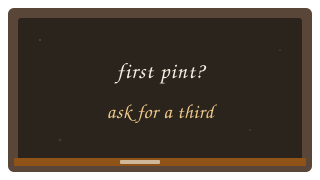

Publicans
How a pub can join in
If you run a pub and want to do the same as The Vine, say so. No branding pack required.
- Keep one beer in genuinely good condition. One excellent cask beats four tired ones.
- Offer a third as the first measure, not a half poured into a pint glass as a favour.
- Tell the truth about what is on. “It went on this morning” is a better sales pitch than “award-winning.”
- Do not quiz anyone. If they like it, they will ask. If they don’t, they will drink something else and you have lost nothing but three ounces of beer.

The chalkboard
A handwritten chalkboard that reads “first pint? ask for a third” is enough. Cask Ale Week is over and the banners have come down. Keep the board up anyway.
That is the whole campaign. The rest is writing, television, and the long, dull work of keeping cellars cold.